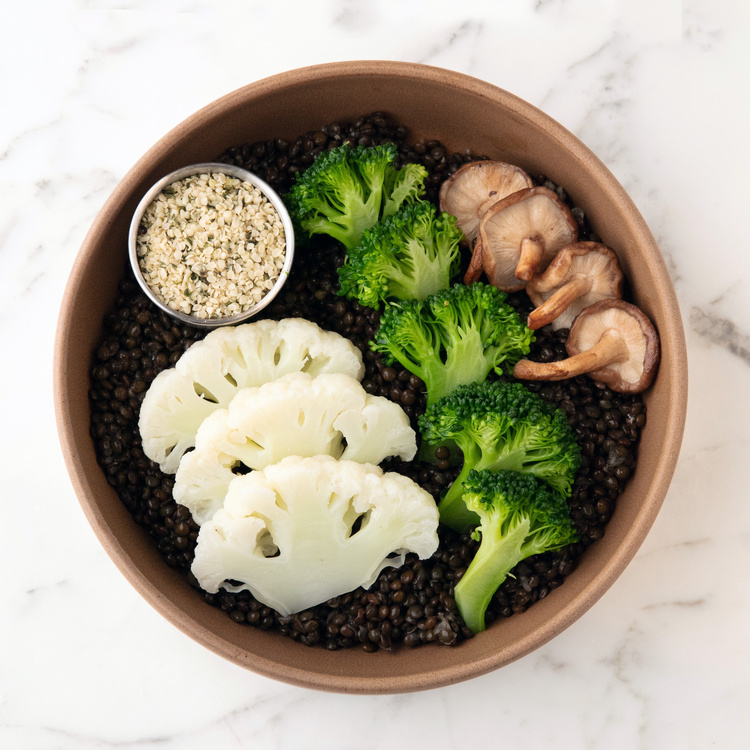

Super Veggie

Descripción
Super Veggie" es un plato nutritivo y delicioso, diseñado para promover la salud y el bienestar. Combina lentejas negras, ricas en proteínas y fibra, con una variedad de verduras crucíferas y hongos, aportando una gran cantidad de nutrientes esenciales. El jengibre, el ajo y el comino añaden un toque de sabor y beneficios adicionales para la salud.
La preparación de "Super Veggie" se centra en técnicas de cocción suaves para minimizar la formación de AGEs y ALEs. Es una opción ideal para quienes buscan una comida basada en plantas que sea a la vez deliciosa y beneficiosa para la salud a largo plazo.
Ingredientes
- Lentejas negras: 45 gramos secas (~150 gramos cocidas)
- Brócoli (cabeza + tallo): 250 gramos (o brotes de brócoli)
- Coliflor: 150 gramos
- Champiñones shiitake o maitake: 50 gramos
- Ajo: 1 diente
- Raíz de jengibre: 3 gramos
- Lima: 1
- Comino: 1 cucharada
- Vinagre de sidra de manzana: 1 cucharada
- Semillas de cáñamo: 1 cucharada
- Aceite de oliva virgen extra: 1 cucharada (rociar después de la preparación)
Pasos
- Pesar las verduras.
- Poner el brócoli, la coliflor, los champiñones (maitake o shiitake), el jengibre y el ajo en agua hirviendo*. Hervir hasta que estén tiernas (7-9 minutos). También se puede hacer al vapor.
- Lentejas: poner agua a hervir en una cacerola mediana y añadir las lentejas. Bajar el fuego y cocer destapadas durante 18-20 minutos o hasta que estén «al dente». Colocar en un colador para escurrir y enjuagar con agua fría.
- En un bol, mezclar las lentejas cocidas, el brócoli, la coliflor, los champiñones, el jengibre y el ajo.
- Añadir el comino, el vinagre de manzana y el zumo de una lima a la mezcla de verduras. Mezclar para cubrir uniformemente.
- Cubrir con semillas de cáñamo y rociar con aceite de oliva virgen extra.
- Servir: Disfruta de tu plato supervegetariano.
*Recuerde cocinar a baja temperatura, alta humedad, alta acidez y métodos de cocción con alto contenido de antioxidantes para minimizar la formación de productos finales de glicación avanzada (AGE) y productos finales de peroxidación lipídica avanzada (ALE).